From a survey batch to a 3D property record.
A new reference set based on the problem statement, supplied image pack and inspected dataset. These are captures of the interactive prototype. They do not depict the empty live application.
The working map
One inspector. Visible floor, section and underground controls. Search focuses the selected property.
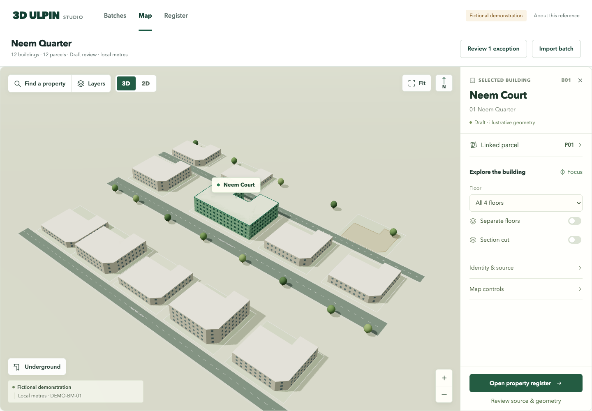
Select a floor and a space
Hide the levels above or isolate one floor; space highlights use its own polygon.
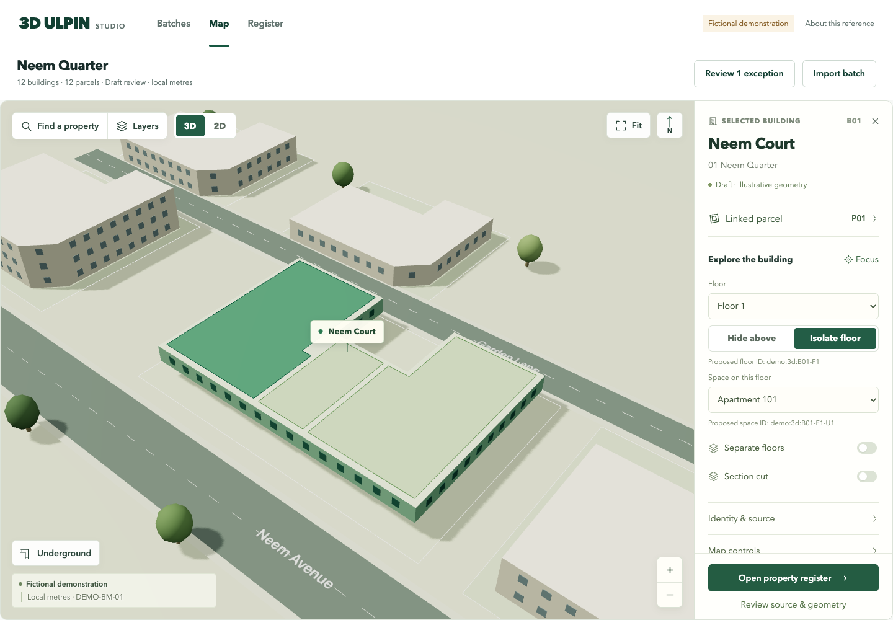
Inspect a vertical section
Adjust a clipping plane in the fictional benchmark. This is a visual cut, not a measured solid intersection.
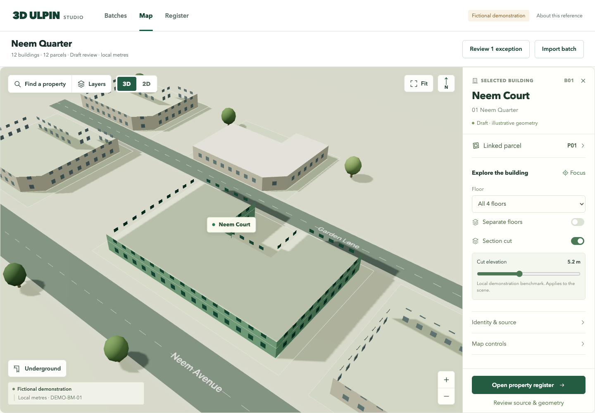
Explore below ground
Reveal the source-linked utility alignment while keeping the surrounding parcels in context.
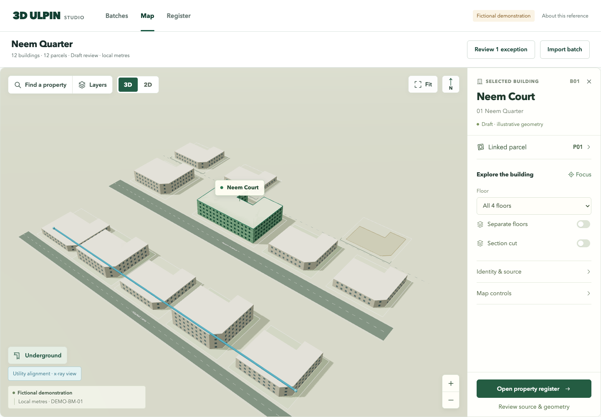
Start with survey batches
Bulk work, dependencies and exact next steps. Partial recording keeps unresolved items visible.
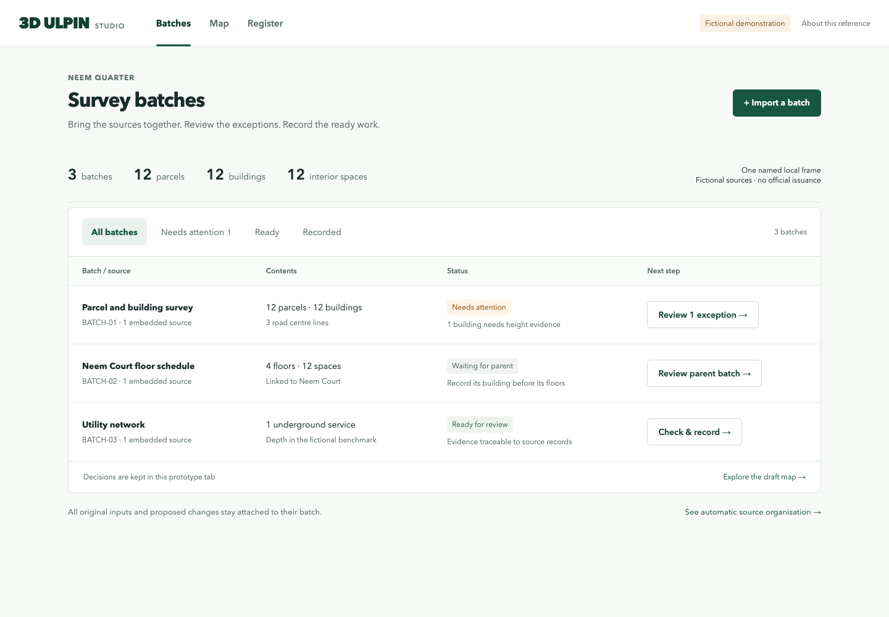
Receive mixed sources
A file-first entry with all seven sample source entries and explicit metadata-only states.
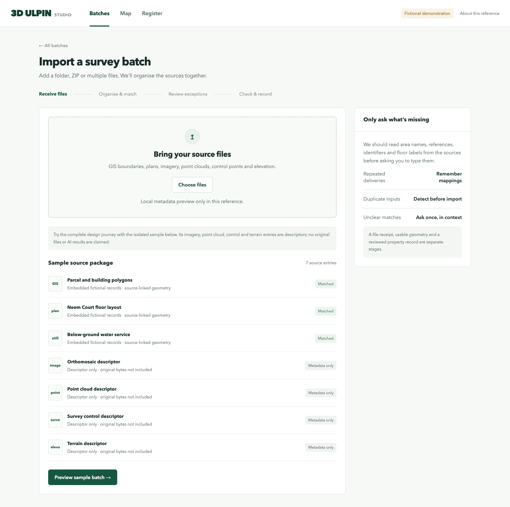
Review what arrived
Separate received descriptors, usable geometry and missing evidence before review.
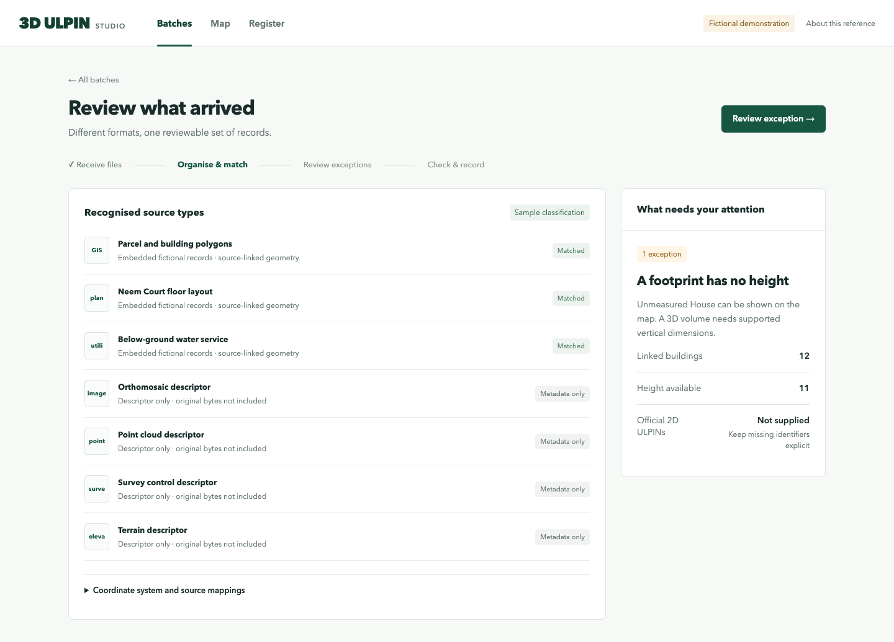
Resolve only the exception
Keep the footprint, defer the missing height, and continue with supported work.
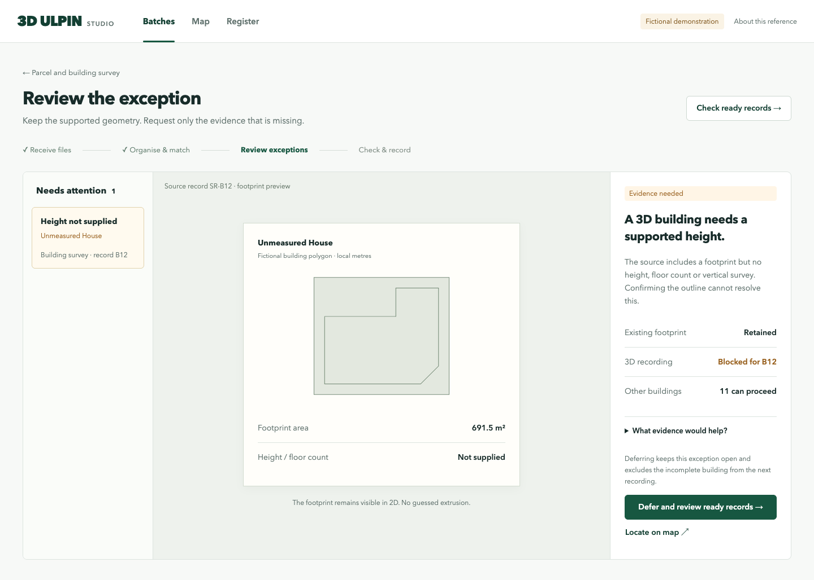
Check the proposed floor layout
Switch floors, select individual spaces and compare the authored source boundary with its proposal overlay.
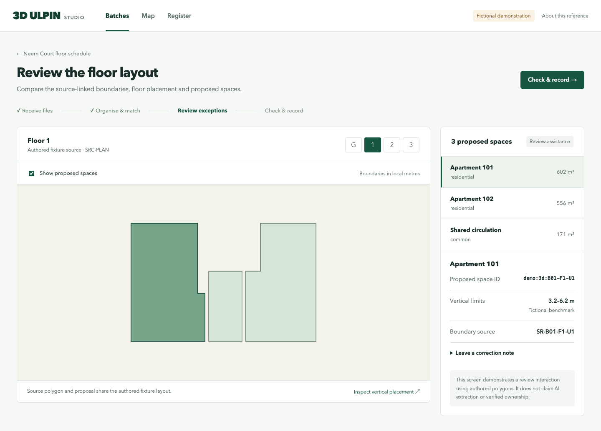
Record a clear scope
Bounded selection table, parent dependencies, included relationships and fresh acknowledgement.
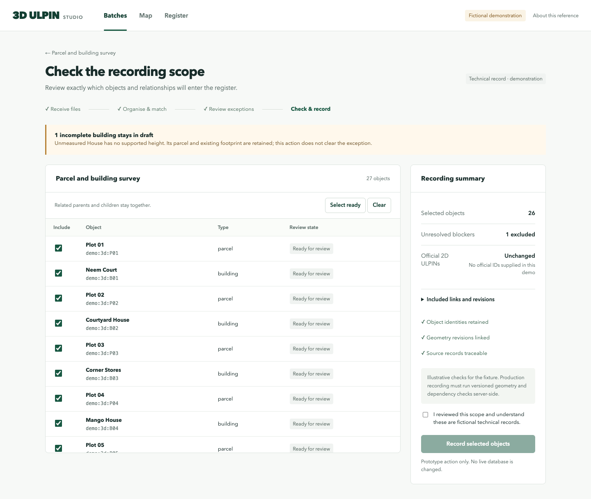
Read the property record
Floors and spaces first. Evidence, rights and history are contextual; official and proposed IDs remain separate.
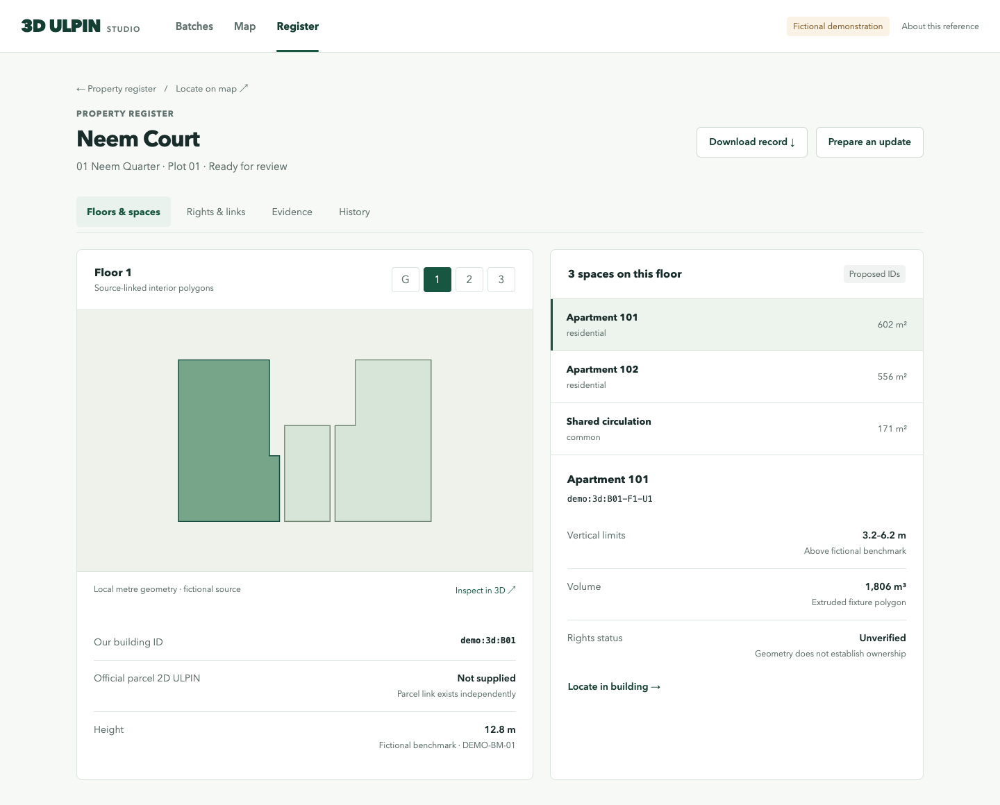
A source-preserving normalization model
Each adapter preserves the original source and its attributes, then proposes canonical records with evidence and transformation lineage. Unknown values stay unknown.
| Layer | Responsibility |
|---|---|
| Sources and records | Original revision, hash, locator, native reference and unchanged vendor attributes. |
| Observations | Extracted or measured assertions, units, uncertainty and competing evidence. |
| Spatial objects | Stable identities for parcels, buildings, floors, spaces and infrastructure. |
| Geometry revisions | Named metre frame, vertical reference, polygon holes, lineage and explicit missing geometry. |
| Relationships and rights | Many-to-many membership and separately reviewed rights evidence. |
| Batches and reviews | Staging, duplicate prevention, exceptions, scoped decisions and replayable processing. |
The inspected Drive baseline is synthetic: 31 parcels, 32 buildings and 26 floor-space rows. Those floor-space rows lack individual unit polygons; DSM vertical reference is unknown. The new fixture uses separately authored geometry and does not claim to fill those source gaps.
The v1 fixture supports vector geometry plus explicit vertical extents. Native solid/surface support is a concrete proposed extension, not implemented renderer or standards compliance. Real ingestion, inference and recording remain application implementation work.